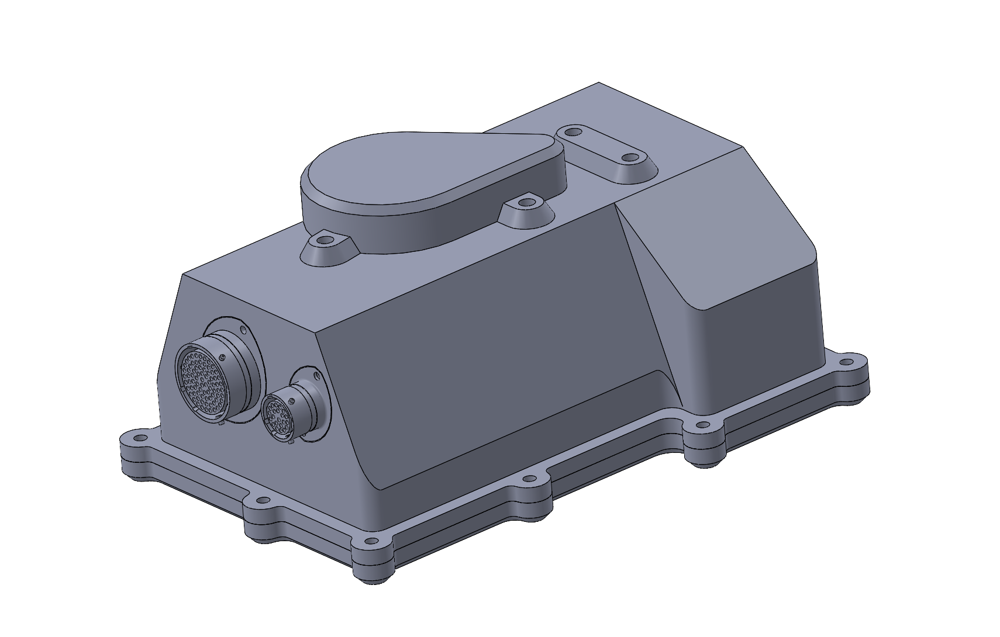
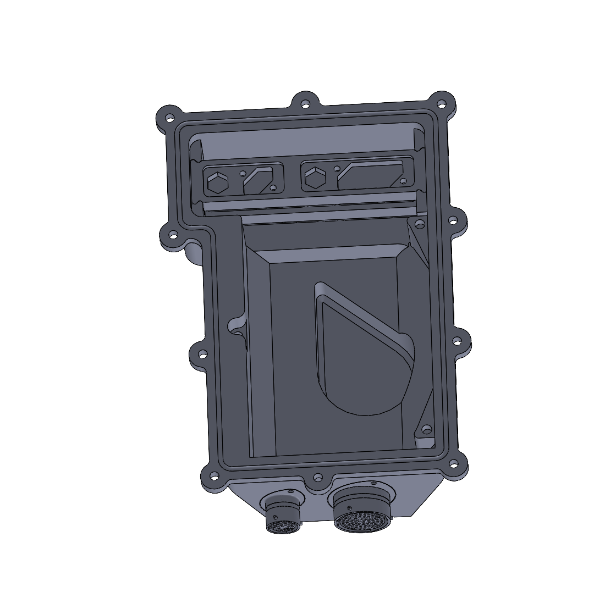
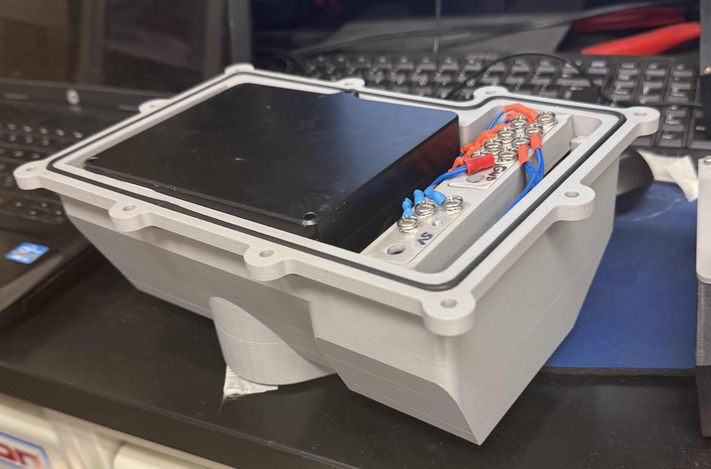
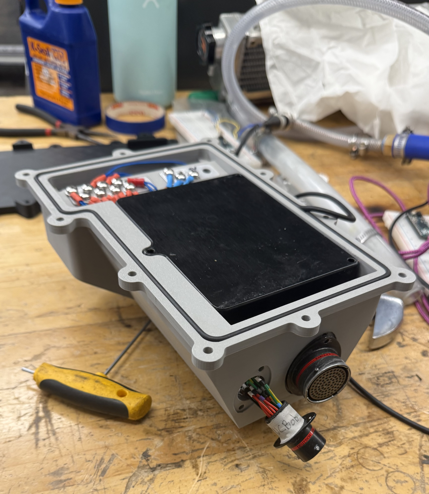

I led the mechanical design of the NC Bob, a sealed low-voltage enclosure mounted on the chassis side of Columbia's Formula SAE Electric car. The enclosure houses low-voltage signal distribution and connector interfaces, including custom internal terminal-lock hardware that retains mating connectors against vehicle vibration. The project addressed prior-season weaknesses in waterproofing reliability and connector retention while fitting into a tight chassis-side packaging envelope. The goal was to deliver a fully sealed, vibration-tolerant, serviceable enclosure that could be reliably produced in-house using resin printing and waterjet cutting.
I owned the full mechanical design of the NC Bob, including enclosure CAD, sealing strategy, internal terminal-lock design, manufacturing method selection, and prototype validation. I coordinated closely with the low-voltage electrical team on connector layout and wire routing, and with the chassis team on mounting interfaces and packaging clearances within the surrounding tube and undertray geometry.
The enclosure was developed in SolidWorks alongside the surrounding chassis assembly to ensure tight integration with adjacent tubes, mounting features, and harness routing. Packaging was the dominant design driver: the chassis-side envelope offered limited usable volume, which constrained connector orientation, wire-exit locations, and serviceable access to the internal hardware. I iterated the enclosure footprint and internal layout to fit all required interfaces while preserving enough wall thickness for sealing features and mounting bosses. The enclosure mounts to welded chassis tabs via fastened brackets, replacing prior-season zip-tie mounting and providing a rigid, repeatable interface.

Waterproofing used a two-layer approach. A full perimeter O-ring groove between the enclosure body and lid provides the primary seal, with the groove geometry tuned for consistent compression around the lid. Localized gasket features at each cable and connector exit form the secondary seal, preventing ingress at the highest-risk locations where wiring penetrates the sealed wall. Resin printing was selected for the enclosure body because of its near-zero porosity and the dimensional accuracy required to produce reliable O-ring glands — properties that FDM printing could not consistently meet.
Internal terminal locks retain mating connectors against vibration and prevent unintended disconnection during operation. The locks were designed as flat geometry compatible with waterjet cutting, chosen for its tight tolerances on flat features, minimal heat-affected zone, and short in-house turnaround. After cutting, parts received manual finishing — deburring and light dimensional cleanup — before being integrated into the enclosure. The lock geometry was designed to mate with the surrounding housing features without secondary machining, keeping fabrication fully in-house and reducing dependency on outside vendors.
Waterproof performance was validated through both spray and submersion testing of physical prototypes. The first prototype identified leak paths at the cable exits and along the O-ring groove, which informed targeted geometry changes to the groove cross-section, the localized gasket seats, and the wire-exit features. Subsequent prototypes underwent the same spray and submersion protocols, and the design required multiple iterations before passing both tests with no measurable ingress. This iterative test–fix–retest cycle confirmed not only the final design's sealing performance but also the robustness of the resin-printed gland geometry under repeated assembly and disassembly.
The dominant challenge was packaging within the chassis-side envelope while preserving sealing performance and serviceability. Tight clearances meant that any change to connector orientation, wire-exit location, or mounting feature size had cascading effects on the O-ring groove path, lid geometry, and internal terminal-lock placement. Coordinating with the low-voltage team on finalized connector selection and with the chassis team on mounting tab placement required several design freezes and reopens before the geometry stabilized. Sealing on a 3D-printed surface also imposed tradeoffs between wall thickness (for stiffness and print reliability) and internal volume (for components and harness routing), which were resolved through targeted local reinforcement rather than uniform wall increases.

The final design delivered a fully sealed, vibration-tolerant NC Bob with reliable connector retention, in-house manufacturability, and clean integration into the chassis-side envelope. Future improvements include molded or overmolded cable exits to further reduce reliance on localized gaskets, captive fastener inserts for improved serviceability across repeated disassembly cycles, and an earlier interface lock-in with the low-voltage and chassis teams to reduce mid-design churn.
